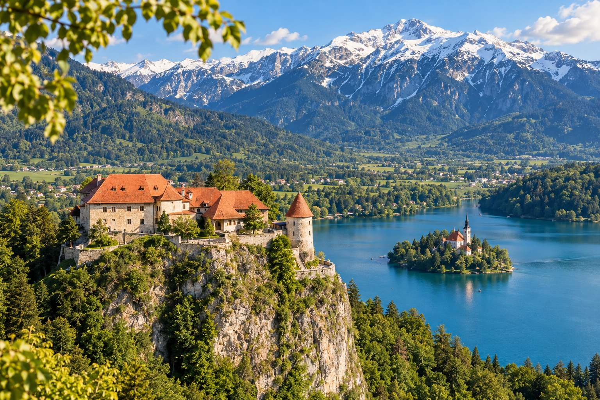
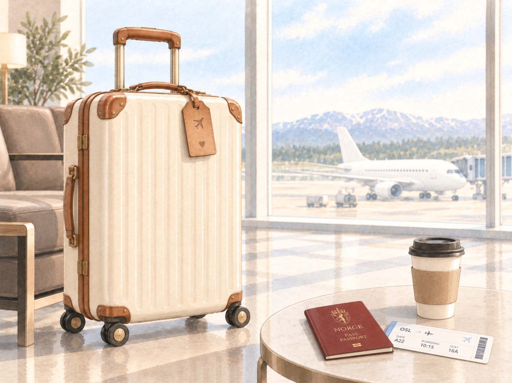
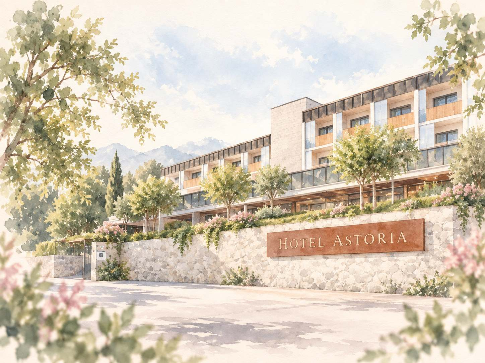
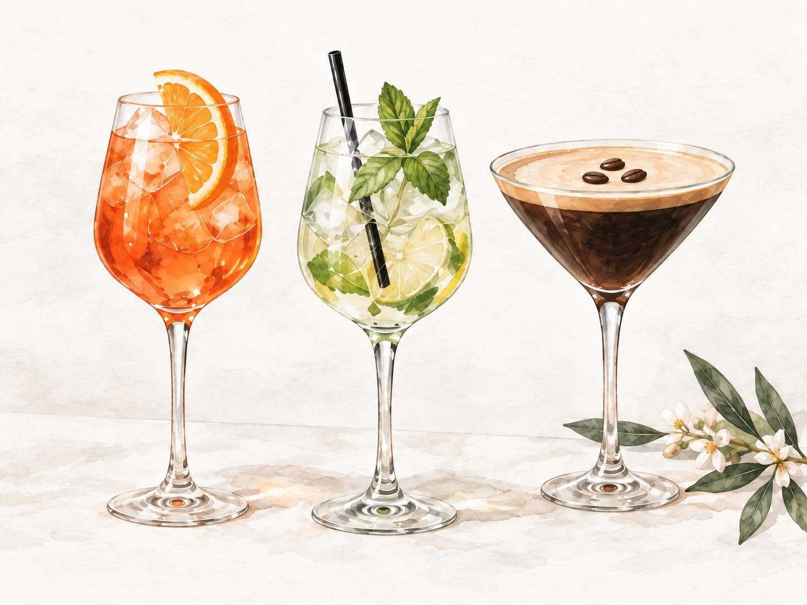
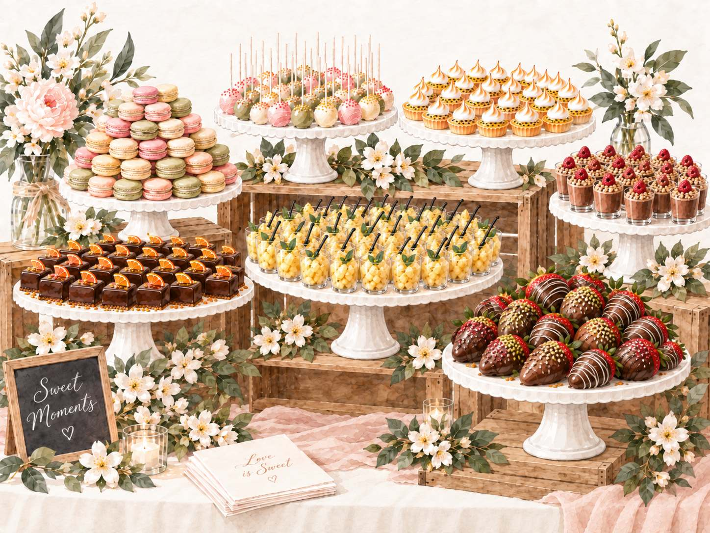
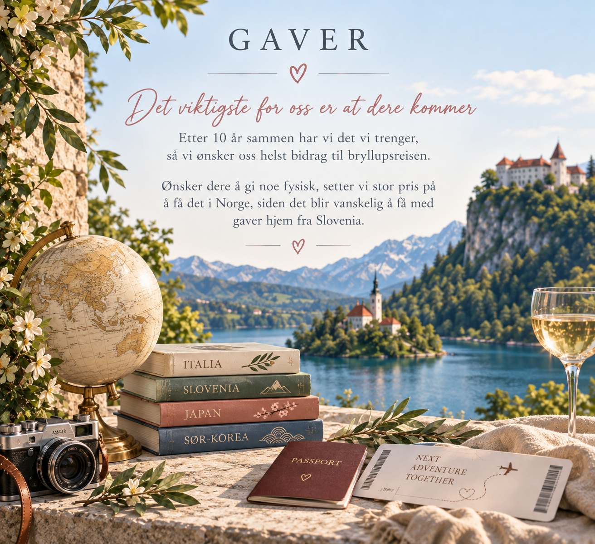
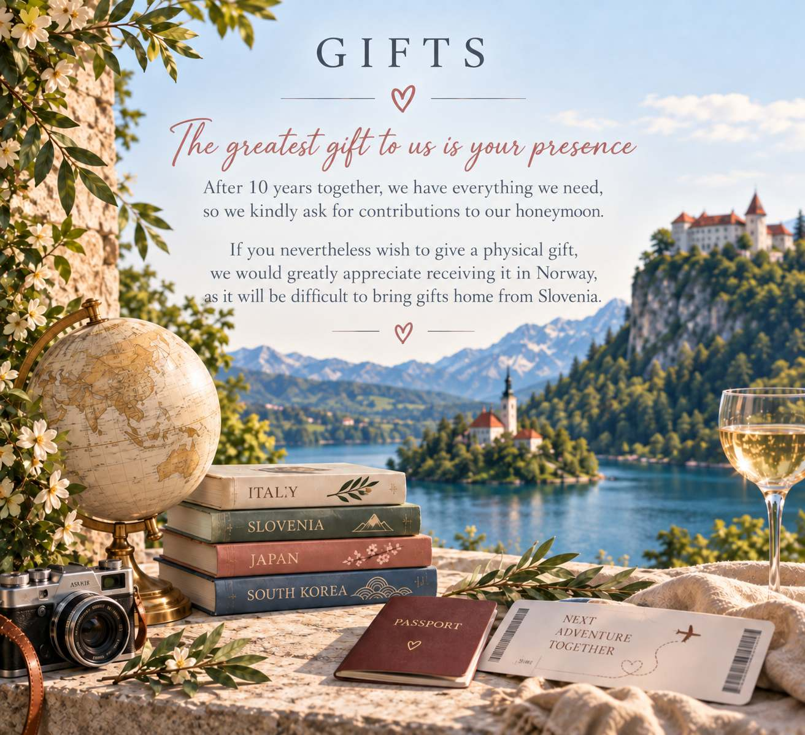

Velkommen til bryllup
Welcome to our wedding
ved det magiske Bled Castle i Slovenia
at the magical Bled Castle in Slovenia
Vi gifter oss på 10-årsdagen vår, lørdag 17. juli 2027, i slottsparken på Bled Castle. Vi håper dere vil feire denne store dagen med oss. På denne siden finner dere informasjon om alt det praktiske, og den vil oppdateres fram mot bryllupet, så ta gjerne en titt igjen når det nærmer seg. Bare å spørre oss om det skulle være noe.
We're getting married on our 10-year anniversary, Saturday 17 July 2027, in the castle park at Bled Castle. We hope you will celebrate this big day with us. On this page you'll find all the practical information, and it will be updated as the wedding approaches, so do check back closer to the date. Just ask us if there's anything at all.

Program
Programme

Fredag 16. juli
Friday 16 July
-
IcebreakerVi inviterer til en icebreaker ved Hotel Astoria slik at dere kan bli litt bedre kjent før selve dagen. Vi serverer lett fingermat og drikke kan kjøpes i baren.IcebreakerWe invite you to an icebreaker at Hotel Astoria so you can get to know each other a little before the big day. We serve light finger food, and drinks can be bought at the bar.
Lørdag 17. juli
Saturday 17 July
-
AnkomstMøt opp i Bled Castle Park senest 30 minutter før seremonien. Vi undersøker muligheten for en felles buss fra hotellet til Bled Castle, bussen vil da gå kl. 13.30.ArrivalPlease be at Bled Castle Park no later than 30 minutes before the ceremony. We are looking into a shared bus from the hotel to Bled Castle; if so, it will leave at 13.30.
-
SeremoniBled Castle Park.CeremonyBled Castle Park.
-
Photoshoot og sightseeing av slottetEtter seremonien vil vi ha litt tid til å ta bilder med fotograf i parken, og dere får tid til å se dere rundt i slottet før vi samles på øverste terrasse. Anbefaler å ta en tur for å se vinkjelleren.Photoshoot and exploring the castleAfter the ceremony we will take some time for photos with the photographer in the park, and you will have time to look around the castle before we gather on the upper terrace. We recommend a visit to the wine cellar.
-
BryllupsmiddagPå øverste terrasse. Det serveres velkomstbobler etterfulgt av en 4 retters middag og dessertbord.Wedding dinnerOn the upper terrace. Welcome bubbles followed by a four-course dinner and a dessert table.
-
Fest, dans og lekerVi fortsetter feiringen på dansegulvet.Party, dancing and gamesThe celebration continues on the dance floor.
-
AvslutningBussen tilbake til hotellet går kl. 01.15.End of the nightThe bus back to the hotel leaves at 01.15.
Reise
Travel
Slik kommer dere til Bled
Getting to Bled
Fly
Flights
Nærmeste flyplass er Ljubljana lufthavn (LJU). Det går ikke direktefly fra Norge, så regn med én mellomlanding og en reisetid på ca. 5–7 timer totalt.
The nearest airport is Ljubljana Airport (LJU). There are no direct flights from Norway, so expect one stopover and a total travel time of about 5–7 hours.
Fra flyplassen er det ca. 30 minutter med taxi til Bled.
From the airport it is about 30 minutes by taxi to Bled.
Papirer
Documents
Slovenia er i EU og Schengen. Norske statsborgere trenger gyldig pass eller nasjonalt ID-kort. Sjekk at passet ikke går ut i løpet av 2027.
Slovenia is in the EU and Schengen. Norwegian citizens need a valid passport or national ID card. Check that your passport does not expire during 2027, and check the entry requirements for your own nationality.

Hvor
Where
Begge stedene på ett kart
Both places on one map
Overnatting og icebreaker
Stay and icebreaker
Hotel Astoria BledPrešernova cesta 44, 4260 Bled, Slovenia
Vielse og fest
Ceremony and celebration
Bled CastleGrajska cesta 61, 4260 Bled, Slovenia
Overnatting
Stay
Vi har ordnet rabatt her, og det er ca. 15 minutters spasertur til Bled Castle. Icebreakeren er også på hotellet.
We have arranged a discount here, and it is about a 15-minute walk to Bled Castle. The icebreaker is at the hotel as well.
Lenken under er forhåndsutfylt med 16.–18. juli for to personer. Datoer og antall kan endres i bookingen.
The link below is pre-filled with 16–18 July for two people. Dates and number of guests can be changed in the booking.
Prešernova cesta 44, 4260 Bled, Slovenia
Book med rabattBook with discount Se på kartView on map
Siste frist for å få rabatten er 31.03.2027.
The deadline for the discount is 31 March 2027.

Andre alternativer
Other options
Bled har mange hoteller, leiligheter og pensjonater i alle prisklasser. Juli er høysesong, så book tidlig.
Bled has plenty of hotels, apartments and guesthouses in every price range. July is high season, so book early.

![Dress code: summer elegant. Feel free to dress summery and elegant, but most importantly, wear something you feel comfortable in. Please use what you already have; both light colours and dark blue or black attire are perfectly fine. Good to know: there is cobblestone and a slight uphill walk to the castle, so choose shoes you can walk comfortably in. July in Bled is warm, often between 25 and 30 degrees Celsius. The evenings by the lake can be chilly, so feel free to bring a shawl or a light jacket. For ladies: dress, skirt or elegant outfit. For gentlemen: suit or elegant outfit.](bilder/kleskode-en.jpg)
Mat og drikke
Food and drink
Til middag serveres det en fire retters meny med kald forrett, suppe, varm forrett og hovedrett. Senere på kvelden blir det satt opp et dessertbord som dere kan forsyne dere fritt fra.
Dinner is a four-course menu with a cold starter, soup, a warm starter and a main course. Later in the evening a dessert table is set up for you to help yourselves.
Det blir fri bar med vann, brus, kaffe, øl og vin gjennom kvelden. Det vil også være en drinkbar hvor dere kan kjøpe drinker selv. Drinkene vil være Aperol Spritz, Hugo Spritz og Espresso Martini.
There is an open bar with water, soft drinks, coffee, beer and wine throughout the evening. There will also be a cocktail bar where you can buy drinks: Aperol Spritz, Hugo Spritz and Espresso Martini.
Har dere allergier, intoleranser eller andre hensyn, gi oss beskjed når dere svarer på invitasjonen.
If you have any allergies, intolerances or other needs, please let us know when you reply to the invitation.




Mens dere er her
While you are here
Bled er verdt noen ekstra dager
Bled is worth a few extra days

Rundt Bledsjøen går det en tur på seks kilometer, og ute på øya i midten ligger kirken man ror til. Vintgar-juvet er en kort kjøretur unna, Triglav nasjonalpark starter rett utenfor byen, og Ljubljana er omtrent en time med bil. Mange gjester velger å legge på noen dager.
A six-kilometre walk circles Lake Bled, and on the island in the middle is the church you row out to. Vintgar Gorge is a short drive away, Triglav National Park starts just outside town, and Ljubljana is about an hour by car. Many guests choose to add a few days.
Vanlige spørsmål
Frequently asked questions
Er det noe mer, bare spør oss
Anything else, just ask us
Kan jeg ta med barn?
Can I bring children?
Vi ønsker at bryllupet vårt skal være en voksenfeiring, og inviterer derfor i utgangspunktet gjester fra 18 år og oppover. Hør med oss dersom dere er usikre.
We would like our wedding to be an adult celebration, so as a rule we invite guests aged 18 and over. Check with us if you are unsure.
Spedbarn er selvfølgelig hjertelig velkomne. Vi ønsker ikke at nybakte foreldre skal måtte takke nei fordi det ikke er mulig å være borte fra den minste. Dersom dere har behov for å ha med en barnevakt eller to, er vedkommende hjertelig velkommen til middag.
Infants are of course very welcome. We do not want new parents to have to decline because they cannot be away from the little one. If you need to bring a babysitter or two, they are very welcome to join us for dinner.
Gi oss gjerne beskjed på forhånd dersom spedbarn eller barnevakt skal ha plass ved bordet, så sørger vi for at det blir ordnet.
Please let us know in advance if an infant or babysitter needs a place at the table, and we will make sure it is arranged.
Kan jeg ta med følge?
Can I bring a plus-one?
Ja, det synes vi er veldig hyggelig! Vi setter bare pris på å få møte vedkommende før bryllupet, dersom det er mulig.
Yes, we would love that! We would just appreciate meeting them before the wedding, if possible.
Når bør jeg booke fly?
When should I book flights?
Prisene varierer en del, og det er foreløpig ikke så mange avganger tilgjengelig så langt frem i tid. Vi ville derfor kanskje ventet til rett over nyttår før dere bestiller.
Prices vary quite a bit, and there are not many departures available this far ahead yet. We would perhaps wait until just after New Year before booking.
Vi følger med på prisene og rutene fremover, og gir gjerne beskjed dersom vi ser gode priser eller aktuelle avganger.
We are keeping an eye on prices and routes, and will happily let you know if we spot good fares or suitable departures.
Hvor lenge bør jeg bli?
How long should I stay?
Vi anbefaler å komme senest fredag ettermiddag dersom dere ønsker å bli med på icebreaker fredag kveld. Reiser dere hjem søndag, får dere med dere hele bryllupshelgen.
We recommend arriving by Friday afternoon at the latest if you want to join the icebreaker on Friday evening. If you travel home on Sunday, you get the whole wedding weekend.
Har dere mulighet til å bli litt lenger, vil vi absolutt anbefale det. Slovenia er en litt ukjent perle, med mye å oppleve på relativt korte avstander, og passer perfekt for noen ekstra feriedager før eller etter bryllupet.
If you can stay a little longer, we would definitely recommend it. Slovenia is a bit of a hidden gem, with lots to see within short distances, and is perfect for a few extra holiday days before or after the wedding.
Skjer det noe på søndag?
Is anything happening on Sunday?
Vi har foreløpig ingen faste planer på søndag. Dagen er derfor fri til en rolig morgen med frokost, litt sightseeing eller hjemreise. Alt etter hva som passer best for dere.
We have no fixed plans for Sunday yet. The day is free for a slow morning with breakfast, some sightseeing or the journey home, whatever suits you best.
For dem som blir igjen i Bled, håper vi selvfølgelig å få sagt ordentlig hadet før dere reiser videre.
For those staying on in Bled, we of course hope to say a proper goodbye before you travel on.
Hvordan kommer jeg meg til seremonien?
How do I get to the ceremony?
Vi undersøker muligheten for en felles buss. Det er kun 15 min å gå, men det er grusvei og bratt.
We are looking into a shared bus. It is only a 15-minute walk, but the path is gravel and steep.